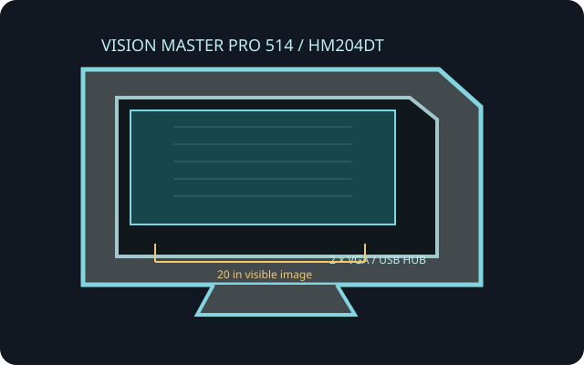

[ INDIVIDUAL COMPONENT // IIYAMA ]
iiyama Vision Master Pro 514 (HM204DT)
The HM204DT Vision Master Pro 514 is a 22-inch Diamondtron NF workstation CRT with a 20-inch viewable image.

IDENTIFICATION: HM204DT is the chassis/model designation; suffix variants and regional manuals may differ. The tube is analog and has no panel-native pixel resolution.
Technical specifications
| Model / visible size | iiyama Vision Master Pro 514 HM204DT; 22-inch nominal CRT, approximately 20-inch viewable area, 4:3 Diamondtron aperture grille. |
|---|---|
| Grille pitch | 0.24 mm aperture-grille pitch. |
| Resolution / refresh | No fixed native raster. Published maximum is 2048 × 1536 at up to 85 Hz; horizontal scan range up to 130 kHz and vertical range 50–160 Hz. Confirm exact region/suffix timing chart; maximum pixel dimensions and maximum refresh do not necessarily coincide. |
| Connectors | Dual 15-pin D-sub (HD15/DE-15) analog RGB inputs; integrated USB hub with one upstream and four downstream USB ports on this family. USB is not a video input. |
| Power | AC mains, nominal 100–240 V, 50/60 Hz; operating use is about 150 W depending on mode. Follow the exact rear nameplate rating and grounded mains connection. |
| Host compatibility | Analog VGA RGB is required. A digital-only HDMI/DisplayPort source needs an active DAC/converter supporting the selected scan timing. USB hub operation requires a host USB link. |
Compatibility and safety notes
Connect only to one of the analog inputs and set a timing inside the manual's horizontal/vertical limits. These displays are heavy and CRT circuitry can retain lethal voltage after unplugging. Do not remove the cover; only a trained CRT service technician should work internally.
Manufacturer/manual sources
- iiyama — HM204DT Vision Master Pro 514Manufacturer product page and model identification.
- iiyama Vision Master Pro 514 HM204D/DT Owner's ManualArchived model manual for setup, supported modes and safety.